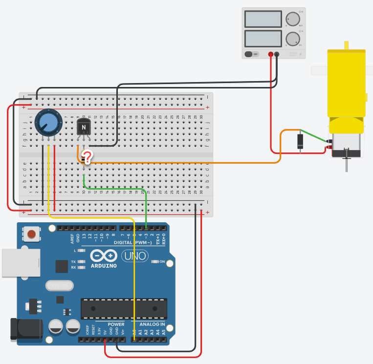

Stuur een DC motor aan via een transistor, en regel zijn snelheid met een potentiometer, van stilstand tot voluit. Onderweg reken je zelf uit welke basisweerstand je nodig hebt.
Een motor kan je niet rechtstreeks aan een uitgangspin hangen, want hij trekt te veel stroom. Waarom dat zo is staat op De DC motor, en hoe je dat met een transistor oplost op De transistor als schakelaar. Die twee pagina's heb je hier allebei nodig, dus lees ze eerst.
Deze oefening werk je uit in TinkerCAD. De motor is daar de Hobby motorreductor, en de transistor de 2N2222 (een NPN).

De potentiometer zit op A0, de basis van de transistor hangt via de basisweerstand aan pin 3, en de motor krijgt zijn stroom uit een aparte voeding. Bij de basisweerstand staat een vraagteken, want die waarde reken je zelf uit.
Je ziet op het schema een diode dwars over de motor staan, met de streep naar de plus. Dat is de vrijloopdiode, en die is niet optioneel. Een motor is een spoel, en die stuurt bij het uitschakelen een spanningspiek terug die je transistor kapotmaakt. Waarom dat zo is, staat op De transistor als schakelaar. Teken ze mee, ook al doet TinkerCAD zonder die diode niet moeilijk.
Meet hoeveel stroom je motor trekt. Hang de motor even rechtstreeks aan de voeding en meet de stroom. In TinkerCAD kan dat met een multimeter, of je leest de waarde af op de voeding zelf. Die stroom is je Ic, de collectorstroom die de transistor straks moet doorlaten.
Zoek Vbe en hFE op in de datasheet. Beide staan in de datasheet van de transistor. Vbe is de spanning over de basis-emitterjunctie, hFE de stroomversterkingsfactor.
Neem marge op de hFE. Reken niet met de waarde uit de datasheet zelf. Deel ze ruim door, zodat de transistor zeker voluit schakelt en de nodige collectorstroom hoe dan ook kan leveren. Op de referentiepagina staat uitgelegd waarom, en met welke factor.
Bereken Rb. Eerst Ib = Ic / hFE, dan Rb = (Vcc - Vbe) / Ib. Rond af naar een weerstand die echt bestaat.
Lees de potentiometer uit en stuur de motor. Herschaal de gelezen waarde zodat je de motor volledig kan doen stilstaan én voluit kan laten draaien, en zet die waarde met analogWrite() op de basis.
Toon de spanning op de seriële monitor. Zet op de seriële monitor welke spanning je op pin 3 zet, en controleer met een multimeter of dat ongeveer klopt.
Pin 3 springt bij analogWrite() heen en weer tussen 0 V en 5 V, in plaats van op een vaste tussenspanning te staan. Wat je multimeter je toont is het gemiddelde daarvan, en dat is waar PWM op neerkomt. Zet je er 128 op, dan staat de pin ongeveer de helft van de tijd hoog en meet je ongeveer 2,5 V. Reken in je programma dus met datzelfde gemiddelde: spanning = waarde * 5.0 / 255.
Sla je oefening op.
Overloop volgende checklist om je oefening zelf te evalueren:
De berekening voor de motor van 80 mA uit de referentiepagina, stap voor stap:
Ic = 80 mA, gemeten.hFE = 200 volgens de datasheet, maar we rekenen met 40 om ruim in saturatie te zitten.Ib = 0,08 A / 40 = 2 mA.Rb = (5 V - 0,7 V) / 0,002 A = 2150 Ω, dus we nemen 2,2 kΩ.Meet jouw motor een andere stroom, dan komt er een andere weerstand uit, en dat hoort zo.
In de code herschaal je de 0 tot 1023 van de potentiometer naar de 0 tot 255 van analogWrite(). De spanning die je afdrukt is het gemiddelde van het PWM-signaal, dus de ingestelde waarde gedeeld door 255 maal 5 V. Let op het punt in 5.0. Laat je dat weg, dan deelt de Arduino met gehele getallen en krijg je altijd 0 te zien.
const int motorPin = 3; // via de basisweerstand naar de basis
const int potPin = A0;
void setup()
{
pinMode(motorPin, OUTPUT);
Serial.begin(9600);
}
void loop()
{
int potWaarde = analogRead(potPin); // 0 tot 1023
// herschaal naar het bereik van analogWrite()
int snelheid = map(potWaarde, 0, 1023, 0, 255);
analogWrite(motorPin, snelheid);
// de gemiddelde spanning die op pin 3 staat
float spanning = snelheid * 5.0 / 255;
Serial.print("Snelheid: ");
Serial.print(snelheid);
Serial.print(" Spanning: ");
Serial.print(spanning);
Serial.println(" V");
delay(200); // niet sneller afdrukken dan je kan lezen
}